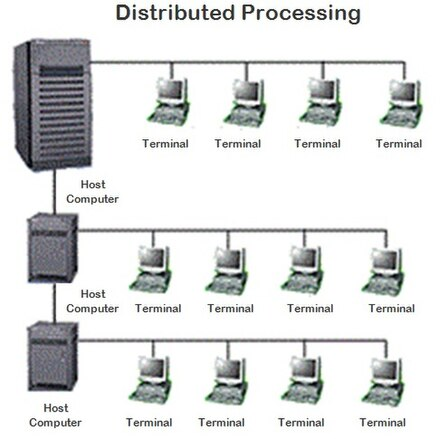

Компьютерлік желілер.
Компьютерлік желі (ағылш. сomputer network) — барлық
құрылғылардың бір-бірімен өзара әрекеттесуіне мүмкіндік беретін
байланыс желілері арқылы қосылған компьютерлердің және басып
шығарғыштар мен пернетақталар сияқты басқа құрылғылардың тобы.
Желілер шағын немесе үлкен, кабельдер арқылы тұрақты жалғанған,
немесе телефон желілері мен сымсыз арналар арқылы уақытша жалғанған
болуы мүмкін. Ең үлкен желі —
Интернет, ол бүкіләлемдік желілер тобы болып табылады. Сонымен қатар,
Интернет ішкі желі болып табылады.
Классификациясы
Территориалды таралуы бойынша:

-
PAN (Personal Area Network) — персоналды желі, бір иегерге
тиісілі түрлі құрылғылардың өзара әрекеттесуі үшін қажет.
-
LAN (Local Area Network) — жергілікті желі, қызмет
көрсетушілеріне шығуына дейін тұйық инфрақұрылымы болады. «LAN»
термині кішкене офистік желіні де, жүздеген гектар аймақты
алатын үлкен зауыт деңгейіндегі желіні анықтай алады. Шетелдік
негіздерде тіпті жуықталған бағалау береді — радиусы алты милге
жуық (10 км) болатын желілер. Жергілікті желілер жабық типті
желілер болып табылады, бұл желіде өздерінің кәсібіне байланысты
жұмыс істейтін, тек қолданушылардың шектелген тобы ғана рұқсатты
ала алады.
-
CAN (Campus Area Network — кампустық желі) — жақын орналасқан
ғимараттардың жергілікті желілерін біріктіреді.
-
MAN (Metropolitan Area Network) — бір немесе бірнеше қала
шегіндегі мекемелер арасындағы қалалық желілер, көптеген
жергілікті есептеуіш желілерді байланыстырады.
-
WAN (Wide Area Network) — басты желі, үлкен географиялық
аймақтарды алатын, ішіне жергілікті желілермен қоса,
телекоммуникациондық желілер мен құрылғылар да кіреді. WAN
мысалы — пакеттер коммутациясы бар желілер (Frame relay), олар
арқылы түрлі компьютерлік желілер өзара "сөйлесе" алады.
Глобалды желілер ашық және барлық қолданушыларға қызмет
көрсетуге бағытталған болып табылады.
«Корпоративті желі» термині әдебиетте сонымен қатар бірнеше
желілерді біріктіруді анықтау үшін қолданылуы мүмкін, ал ішкі
желінің әрқайсысы түрлі техникалық, бағдарламалық және ақпараттық
принциптерге негізделіп құрылған болуы мүмкін.
Мені Басыңыз